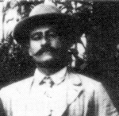

IL SOR ETTORE
Testo ripreso dal sito www.ilpaliodisiena.com
Il simbolo della Nobile Contrada dell'Oca è senz'altro il "sor" Ettore Fontani, il più potente dirigente paliesco del Novecento.
Nella sua attiva militanza ocaiola dodici vittorie ed il lancio di numerosi cavalli entrati nella storia del Palio.
Tanto per gradire si deve al dirigente di Fontebranda anche la nascita delle stelle Picino, Ciancone ed Aceto, fantino su cui il sor Ettore puntò gli occhi per rilanciare la sua contrada dopo la "disavventura Ciancone" ed un periodo negativo.
Diventò mangino quasi per caso a fine ottocento, l'Oca veniva da un periodo molto travagliato visto i ripetuti successi torraioli di quegli anni e vista la scarsa disponibilità dei più esperti a ricoprire cariche importanti fu scelto questo giovane molto colto e preparato.
La sua conoscenza per i cavalli ed un'indubbia capacità nello stipulare accordi e partiti lo misero subito in una posizione di estremo prestigio nella contrada. Il capolavoro del Fontani fu rivalutare il fantino Angelo Meloni detto "Picino", il quale cacciato malamente dalla Torre dopo i fatti del luglio 1898, diventò negli anni successivi l'arma in più dell'Oca.
Grazie all'infallibile intesa Fontani-Meloni, Fontebranda non solo conquistò quattro successi ma riuscì ad ostacolare in maniera determinante i piani della Torre.
Questa situazione diede la svolta decisiva a molte carriere, anche perchè, Fontani seppe abilmente sfruttare l'amicizia ed i rapporti di lavoro che lo legavano a molti fantini del Palio, riuscendo in tal modo a creare un'organizzazione molto collaudata che si fondava su una dirigenza forte, su un campione del calibro di Picino e su un gruppo di comprimari sempre pronti a sposare la causa ocaiola.
Finita l'era Picino, che ebbe il suo colpo di coda nell'agosto 1934 con la vittoria del figlio Corrado, il Fontani si adoperò per trovare un nuovo fantino che potesse andar bene all'Oca.
Così sfruttando l'amicizia con Gino Gentili, fantino di piazza sul finire degli anni trenta, arrivò da Manziana, nell' immediato dopoguerra, il fratello di quest'ultimo, Beppe, che sarà croce e delizia per gli ocaioli, eroe della vittoria del 1959 e spregevole traditore in occasione del trionfo torraiolo del 1961.
L'addio violento e doloroso ad un campione del calibro di Ciancone spiazzò anche il navigato sor Ettore.
Per l'Oca si aprì in seguito un periodo abbastanza negativo, che durò fino a quando i dirigenti ocaioli, su consiglio del lungimirante vecchio dirigente, riuscirono a portare in Fontebranda quell' Andrea de Gortes detto "Aceto" che sarà la carta vincente dell'Oca dopo la fine del regno del sor Ettore Fontani.

| |